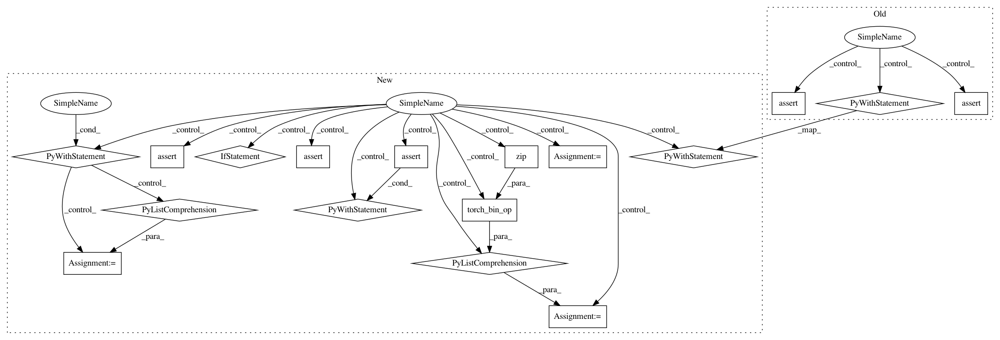

110a17a4d96d21cecf449073c9b66e1c888d2573,test/test_foreach.py,TestForeach,test_float_scalarlist,#TestForeach#Any#Any#,492
Before Change
if dtype == torch.bool:
// see TODO[Fix scalar list]
self.assertEqual(res, [torch_bin_op(t.to(torch.float32), s) for t, s in zip(tensors, scalars)])
with self.assertRaisesRegex(RuntimeError, "result type Float can"t be cast to the desired output type"):
foreach_bin_op_(tensors, scalars)
return
if dtype in torch.testing.integral_types() and self.device_type == "cuda":
// see TODO[Fix scalar list]
self.assertEqual(res, [e.to(dtype) for e in expected])
foreach_bin_op_(tensors, scalars)
self.assertEqual(tensors, res)
return
After Change
// Bool case
if dtype == torch.bool:
if foreach_bin_op == torch._foreach_sub:
with self.assertRaisesRegex(RuntimeError, "Subtraction, the `-` operator, with a bool tensor"):
expected = [torch_bin_op(t, s) for t, s in zip(tensors, scalars)]
with self.assertRaisesRegex(RuntimeError, "Subtraction, the `-` operator, with a bool tensor"):
res = foreach_bin_op(tensors, scalars)
with self.assertRaisesRegex(RuntimeError, "Subtraction, the `-` operator, with a bool tensor"):
[t.sub_(scalar) for t, scalar in zip(tensors, scalars)]
with self.assertRaisesRegex(RuntimeError, "Subtraction, the `-` operator, with a bool tensor"):
foreach_bin_op_(tensors, scalars)
continue
res = foreach_bin_op(tensors, scalars)
expected = [torch_bin_op(t, s) for t, s in zip(tensors, scalars)]
self.assertEqual(res, expected)
with self.assertRaisesRegex(RuntimeError, "result type Float can"t be cast to the desired output type"):
foreach_bin_op_(tensors, scalars)
continue
// If incoming dtype is float16 or bfloat16, runs in float32 and casts output back to dtype.
control_dtype = torch.float32 if (self.device_type == "cuda" and
In pattern: SUPERPATTERN
Frequency: 3
Non-data size: 17
Instances
Project Name: pytorch/pytorch
Commit Name: 110a17a4d96d21cecf449073c9b66e1c888d2573
Time: 2021-03-04
Author: iuriiz@fb.com
File Name: test/test_foreach.py
Class Name: TestForeach
Method Name: test_float_scalarlist
Project Name: pytorch/pytorch
Commit Name: cce84b5ca5fb02bda814138bd361eea6cafc16d5
Time: 2021-02-02
Author: iuriiz@devfair004.maas
File Name: test/test_foreach.py
Class Name: TestForeach
Method Name: test_float_scalarlist
Project Name: pytorch/pytorch
Commit Name: cce84b5ca5fb02bda814138bd361eea6cafc16d5
Time: 2021-02-02
Author: iuriiz@devfair004.maas
File Name: test/test_foreach.py
Class Name: TestForeach
Method Name: test_bool_scalarlist